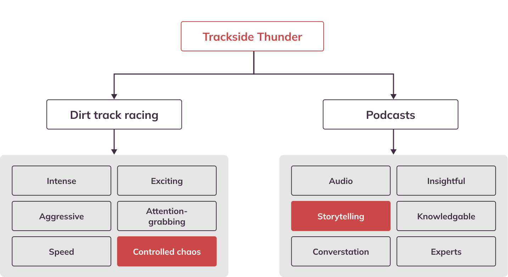
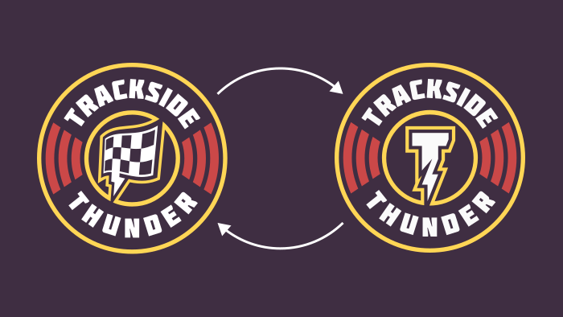
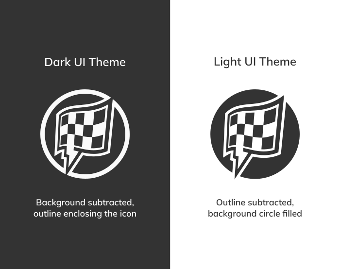
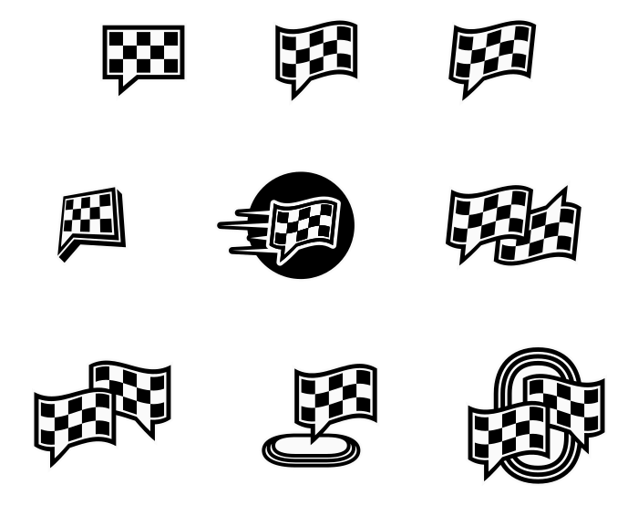
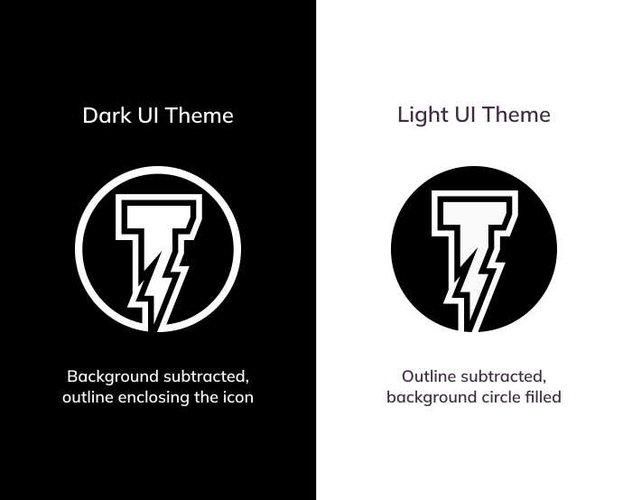

Trackside Thunder
Contents
///Introduction
///Portfolio Relevancy
While this project focused on brand identity rather than product UX, it required the same core skills that apply to UX design: systems thinking, scalability, constraint-based decision making, and designing for long-term use across multiple platforms.
The outcome was not just a single-use logo, but a flexible visual system designed to support future growth, multiple formats, and consistent recognition — similar to how a design system is the backbone of a digital product.
Trackside Thunder is an upcoming podcast, expected to launch in 2026. The name gives a nod to both the podcast’s subject matter, dirt track racing, and the show’s host — Thunder Jones, announcer for River City Speedway in St. Helens, Oregon.
Starting from scratch, the goal was to create a brand that felt established from Day One — credible enough to stand alongside long-running motorsports media, while remaining flexible enough to grow into something bigger.
Define
///Design Goals
Outcomes we want to achieve
- Recognizable: Enable the brand to stand out in a memorable way and attracts attention
- Scalable and modular: Flexibility to adapt to any platform and context, while maintaining brand recognition
- Brand depth: Visual components that can be used independently or arranged into multiple configurations and flavors
- Ready for success: Establish a professional presence at launch, equipped with the tools to grow from Day One
Gameplan
How we achieve those goals
- Be unique: Avoid generic podcast imagery, such as a microphone, and create something distinct and identifiable
- Future proof: Focus more towards clean and timeless design for brand longevity and stability
- Express personality: This isn’t a tech company, lean into the energy and charisma of dirt track racing
- Merch-minded: Easily translate to a variety of clothing and promotional merchandise
Mind Mapping
Identifying high level themes, attributes, and other words/phrases associated with the brand.
This exercise helped narrow the brand keywords toward controlled chaos and storytelling, which later influenced the design direction of the wordmark and icon.
Primary Logo
///Vertical Lockup
The vertical lockup serves as the primary mark for social media, podcast platforms, and square aspect ratio applications.
Horizontal Lockup
The horizontal lockup accommodates wider aspect ratio layouts such as banners, merchandise, and future web use, maintaining legibility at smaller sizes.
Logo Variants
///Tagline
Placeholder description for the tagline logo variant
Pulse Patch
A true, 1:1 square aspect ratio, the Pulse Patch offers versatility in a compact package with a classic and established feel. The subtle design cues of radiating lines hint at both the sound waves of podcast audio and the echoing sounds from the announcer's P.A. system. The Pulse Patch was design with marketing and branded merch in mind—suitable for shirts, hats, stickers, and more.
Fully modular: swappable brand elements
 Sub variants with different brand assets in the center capBullring Badge
The extended version of the primary logo with additional visual elements, including the racetrack border that surrounds and defines the badge's shape.
Design Breakdown
///Icon
The brand’s primary visual identifier. Balancing the concepts of podcast storytelling and the controlled chaos of dirt track racing, the icon represents the core theme of the podcast—conversations about racing.
Adjustments for Context & Usage
 Emphasis was given to properly inverting the icon, ensuring the flag is always filled-in white for both use casesEarly Concepts
Wordmark
- (1): Typeface: Molot—Strong, bold, and chunky to make a statement and establish a presence
- (2): Custom, stylized T with integrated lightning bolt (The T-Bolt)
- (3): -15% bend brings additional character and complements the curves in the brand mark’s waving checkered flag
- (4): Sweeping, tapered underline adds a sense of motion, tying into the racing theme
- (5): Angled cuts in the letterforms pairs with the jagged edges of the lightning bolts
T-Bolt Construction
A step-by-step look at how the T-Bolt icon was made, based off the original letter's geogeomtry.
Submark
An abbreviated version of the wordmark, the T-Bolt is the brand’s visual identity reduced down to it’s most minimalist form. This is intended to be used in a support/utility role within the identity system, with the checkered flag icon serving as the main visual identifier.

Variants: Reusing established design patterns for consistency and flexibility in the visual system.
Brand Elements
///Brand Colors
Connecting to the thunder name, the brand colors pull inspiration from dark, stormy skies and thunderstorm scenes.
Contrast Ratings
Factoring usability, accessibility, and future web applications into the design decisions, all brand colors were carefully selected to ensure core combinations met the minimum WCAG AA Level, AAA in almost all cases.
Eggplant & White
12.49
12.49
Eggplant & Mustard
8.93
8.93
Steel Red & White
4.61
4.61
The Brand in Action
///Placeholder
Placeholder description for the tagline logo variant
Wrap-up
///Outcomes
- Created a flexible brand system rather than a single-use logo
- Designed with real-world constraints and applications in mind, e.g. merch production and platform variability
- Reinforced my approach to design systems beyond traditional UX deliverables